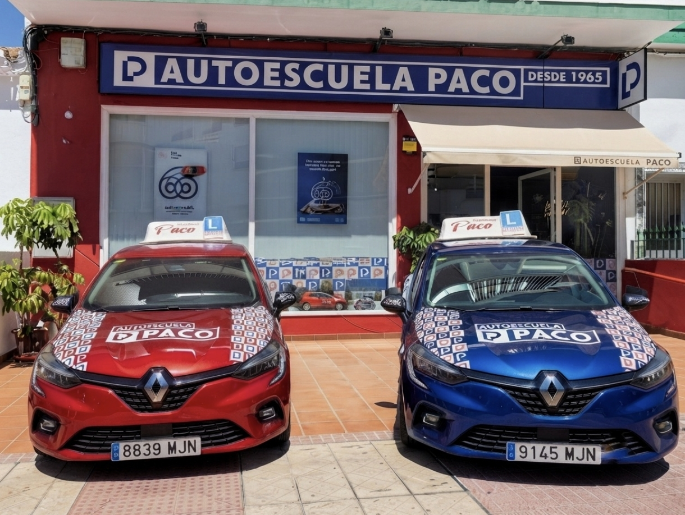
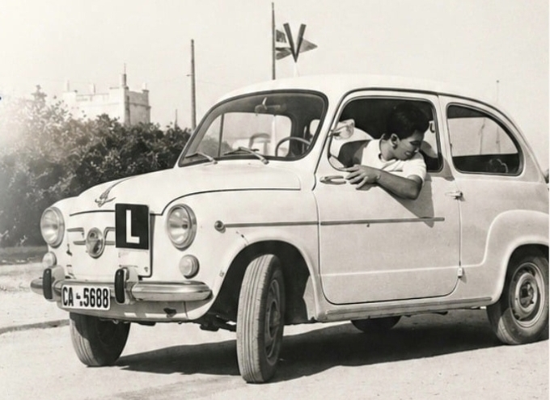

Acompañamiento personalizado
Formación cercana con atención individualizada y profesor titulado en cada etapa.

Desde 1965, enseñando a conducir con experiencia y confianza.
Autoescuela Paco nació en Rota en 1965 ofreciendo un acompañamiento profesional, cercano y de confianza, guiando a generaciones enteras a obtener su permiso de conducir con total garantía.

Combinamos la cercanía de toda la vida con los mejores recursos para asegurar tu aprobado.
Formación cercana con atención individualizada y profesor titulado en cada etapa.
Vehículos completamente equipados y herramientas digitales de apoyo constante para una seguridad total.
Disfruta de la máxima flexibilidad adaptada totalmente a tus necesidades y disponibilidad horaria.
Ponte en contacto con nosotros o visítanos directamente en Rota.
Te explicamos personalmente cómo trabajamos, resolvemos tus dudas y te informamos de las opciones de formación disponibles.
Cómo llegar en Google Maps